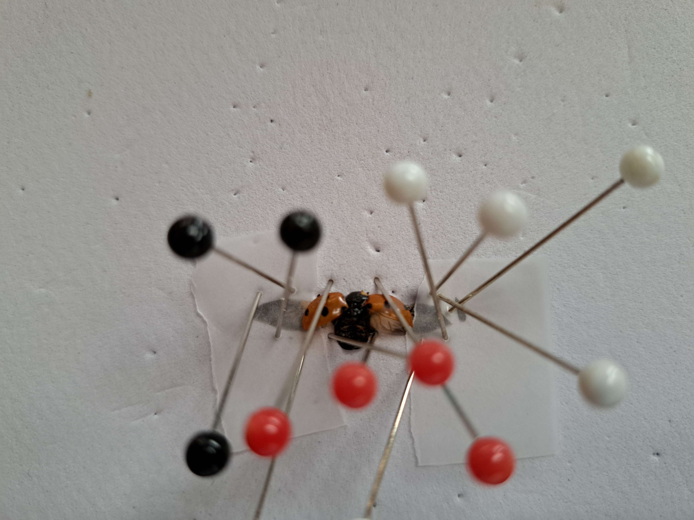
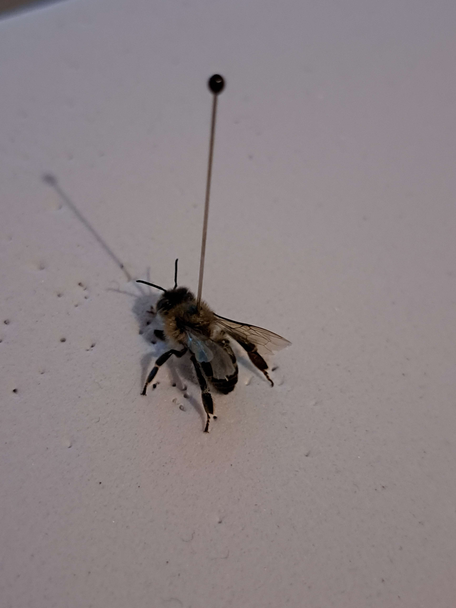
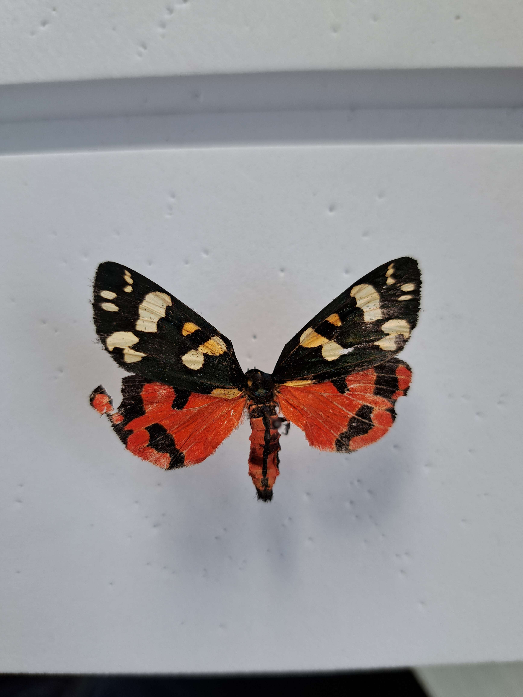

Outside of academia, I keep myself busy with my other hobbies and volunteering!
Volunteering
During the last year of my undergrad, and throughout my Ph.D., I have volunteered as a committee member on the student Computer Science Society
which runs social, academic, and industrial events throughout the year for all students at the university. I have held two roles, though filled in for many more:
2024/25 - Postgraduate (Research) Rep
2025/26 - Postgraduate (Research) Rep
2026/27 - President
I am also one of the school's PGR Reps, helping to organise events for the Ph.D. students to take a break and socialise!
Insects
I love insects (and all arthropods in general!) and as part of my hobby, I enjoy photographing them (just on my phone, no fancy camera) to learn to identify species,
as well as learning about them through reading and online courses.
I also preserve specimens that pass naturally; much like in museum diplays, I pin them so they can be displayed and studied in my own time.
If you want to see some examples, open the section below, though take this as your final warning! The following section contains images of preserved (dead) insects.

7-Spot Ladybird
Coccinella septumpunctata

Honey Bee
Apis mellifera

Scarlet Tiger Moth
Callimorpha dominula
You may notice that they are imperfect specimens; this is partially down to being brittle and hence I cause damage,
but mostly because these animals were in their adult stage and died naturally, meaning they
Plants
Recently, I have gotten into growing and collecting houseplants! I have about 20 at the moment, with a long, long list of more to keep an eye out for!
My favourite houseplant that I own has to be my Oxalis triangularis for its stunning purple leaves, unique shape, and its nyctinasty.
The houseplant I'm after the most is Begonia maculata for its fun wing-shaped polka dot wings.
Alongside collecting plants, I have taken up macramé so I can make my own plant hangers!
Dance
For 2 years of my undergrad, I took weekly classes to learn Ballroom and Latin American dances, however, due to time restrictions,
I had to drop them and I started doing it in my own time instead. I still enjoy learning new moves to improve my ability, and try to learn both lead and follow positions, though I prefer being the follower!